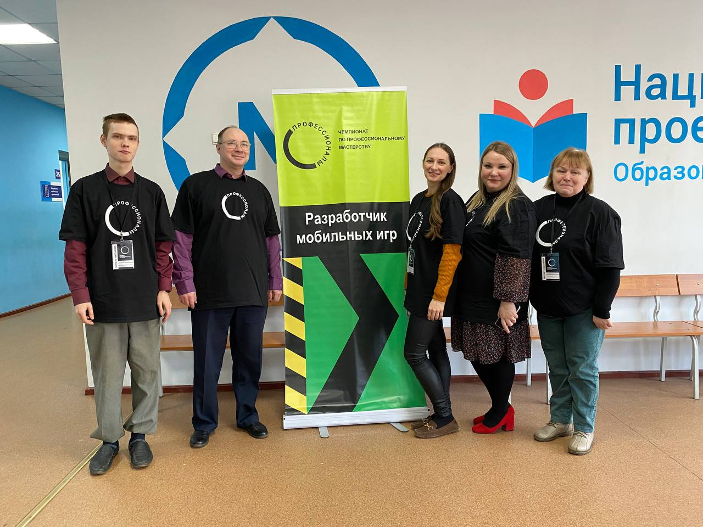
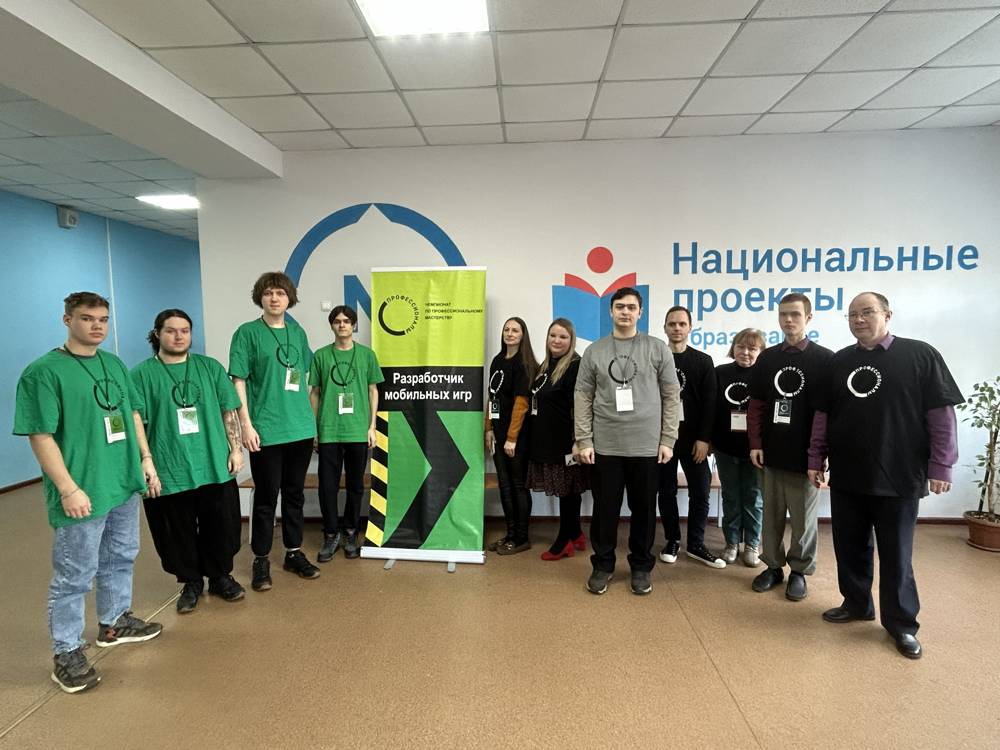
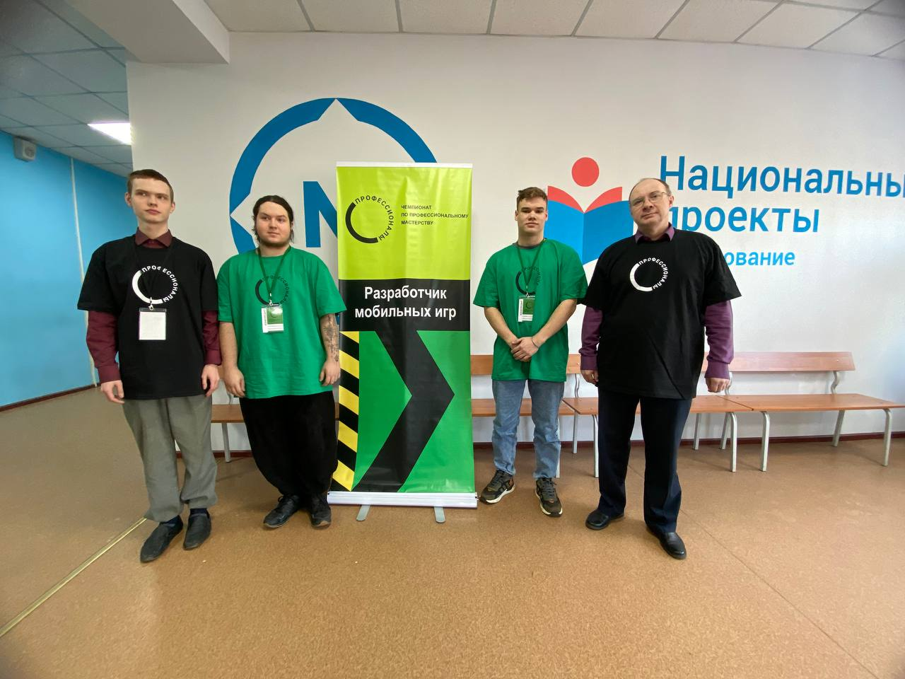

Главный эксперт компетенции «Разработчик мобильных игр» — Малянов Егор Вячеславович. В состав экспертной группы входят специалисты, ответственные за оценку конкурсного задания по 6 модулям, обеспечение охраны труда и соблюдение правил чемпионата.

Участникам регионального этапа предстоит за 3 соревновательных дня разработать игру для мобильных устройств «Лабиринтино». Конкурсанты создадут игровой арт, реализуют механики четырех мини-игр, систему хранения данных, оптимизируют код и представят свой проект экспертам.

В период подготовки эксперты-наставники знакомятся с инфраструктурным листом, конкурсным заданием и геймдизайн-документом. Во время чемпионата их коммуникация с участниками строго регламентирована и возможна только с разрешения главного эксперта.